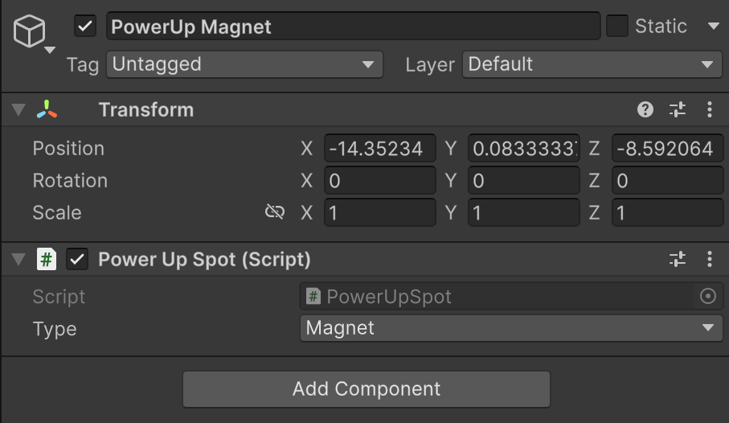
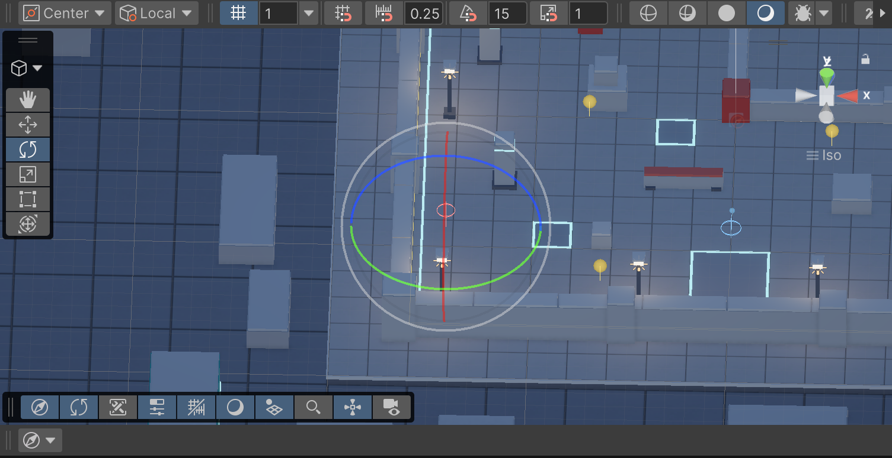
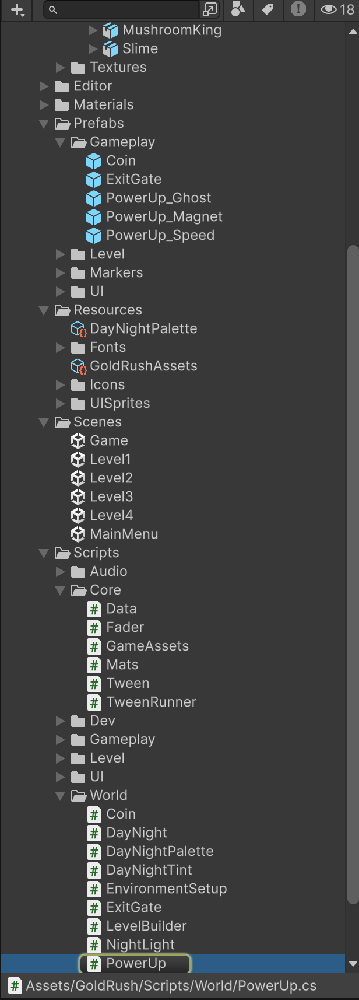

GOLD RUSH · Phase 8
Power-ups and effects
Level 1 now has a glowing power-up. There are three kinds: SPEED (run faster), GHOST (monsters can't see you) and MAGNET (gold flies to you). You also get particle effects: sparkles when you take gold, dust behind your feet, a cloud when you get hit and confetti when you win. You import the package, check what is new and learn how it works.
1Import the package
- Make a new, empty Universal 3D project, set up as in Phase 0 (AI Navigation, Input System, Active Input Handling = Both). Or use your old project and delete the folder
Assets/GoldRushfirst. - Assets → Import Package → Custom Package… Pick
GoldRush_Phase08_PowerUps.unitypackagefromGoldRush_Export/Packages/. - Keep everything ticked and click Import. Wait until Unity has compiled the scripts. The Console must show no red errors.
- File → Build Profiles → Scene List. Drag in
MainMenufirst, thenLevel1(fromAssets/GoldRush/Scenes). - Open
Assets/GoldRush/Scenes/Level1.unity.
Gameplay/PowerUps/PowerUp Magnet. All scripts were already there since phase 1 (every package has all final scripts), so nothing else changes.2Check what is new
Check 1: the PowerUps group
In the Hierarchy, open Level 1 - Training Yard › Gameplay › PowerUps. It has one child: PowerUp Magnet. Like the coins, a power-up is a marker inside the level root.

Check 2: the Power Up Spot component
Select PowerUp Magnet. In the Inspector you see a Power Up Spot component with Type = Magnet. The marker stands on the floor, at Position about -14.4, 0.08, -8.6.

Check 3: the marker in the Scene view
Press F with the marker selected. A red wire ball floats 1.1 m above the floor. That is the gizmo: you only see it in the editor. Cyan = SPEED, purple = GHOST, red = MAGNET.

Check 4: the power-up models
In the Project window, select Assets/GoldRush/Prefabs/Gameplay/PowerUp_Magnet. It is the finished orb: a glass ball (Visual with Sphere and Inner), a Ring on the ground and the Power Up script (Type = Magnet). The marker in Level 1 has no orb inside: the game makes the orb in code when the level starts.
The marker itself is a prefab too: Prefabs/Markers/PowerUp_Magnet (only a Power Up Spot). Prefabs/Markers also has PowerUp_Speed and PowerUp_Ghost. You use these markers in the Practicals.

Check 5: the scripts
Find the three scripts of this phase in the Project window:
| File | What it does |
|---|---|
Scripts/Level/PowerUpSpot.cs | The marker. Stores the type and draws the wire ball. |
Scripts/World/PowerUp.cs | The orb. Floats, spins, knows its colour and name. Create() builds an orb in code. |
Scripts/Gameplay/FX.cs | All particle effects, made in code. |

Check 6: the particle material
Select Assets/GoldRush/Resources/GoldRushAssets. Its Particle field is GR_Particle. Every effect in FX.cs uses a copy of this material.

3How it works
A power-up is a glowing orb that floats above a ring. Walk into it and its effect starts for a few seconds.
| Power-up | Colour | Time | Effect |
|---|---|---|---|
| SPEED | cyan | 6 s | You move 1.55 × faster. A trail of cyan stars follows you. |
| GHOST | purple | 6 s | You turn see-through. Monsters can't see you, and a chasing monster gives up and searches. |
| MAGNET | red | 8 s | Every coin closer than 11 m flies to you. |
The GameManager does the work. These are the key lines (shortened):
Assets/GoldRush/Scripts/Gameplay/GameManager.cs
public const float SpeedDuration = 6f, GhostDuration = 6f, MagnetDuration = 8f;
public float SpeedMultiplier => SpeedActive ? 1.55f : 1f;
// level start: look at every PowerUpSpot in the level
foreach (var pu in scene.GetComponentsInChildren<PowerUpSpot>())
{
var placed = pu.GetComponentInChildren<PowerUp>();
if (placed) { powerUps.Add(placed); continue; } // a PowerUp placed by hand
l.powerUpPoints.Add(pu.transform.position); // else: build one here in code
powerTypes.Add(pu.type);
}
// every frame: is the player close enough? (no colliders)
if ((p.transform.position + Vector3.up - pp).sqrMagnitude < 1.6f * 1.6f) { powerUps.RemoveAt(i); CollectPowerUp(p); }
// CollectPowerUp: effect, sound, timer, message
FX.Burst(pos, col, Color.white, 30, 2f, 6f, 0.4f, 0.8f, 0.2f, true);
AudioFX.Play("power");
case PowerType.Speed: SpeedLeft = SpeedDuration; desc = "Super speed!"; break;- Markers first. When the level starts, the GameManager finds every
PowerUpSpot. If there is noPowerUpinside, it callsPowerUp.Create(), which builds the orb from spheres and cubes at the marker. - Distance, not colliders. Every frame it checks the distance from the player to each orb. Closer than 1.6 m = picked up.
- Timers. A pickup sets
SpeedLeft,GhostLeftorMagnetLeft. Every frame they count down to 0. While one is above 0, the power is on. - Other scripts read it.
PlayerMotormultiplies its speed bygm.SpeedMultiplier.EnemyAI.Vision()starts withif (gm.GhostActive) return false;. With MAGNET on, the coin loop moves coins closer than 11 m towards you. - The orb moves itself.
PowerUp.Update()moves it up and down withMathf.Sin(14 cm), spins it 50° per second and makes the ring "breathe".
The effects (FX.cs)
A particle system shoots many tiny pictures (sparkles, dust, confetti) that move and fade out. FX.cs makes them all in code. You only need to know these functions:
| Function | What it does | Used by |
|---|---|---|
FX.Burst(pos, colorA, colorB, count, …) | One explosion of sparkles in two colours. Then it deletes itself. | power-up pickup |
FX.CoinBurst(pos) | A golden burst plus a soft glow. | coin pickup |
FX.Puff(pos, color) | A small soft cloud. | getting hit, falling down |
FX.Trail(parent, localPos, color, size, life) | Particles that follow an object. Turned on and off with emission.rateOverTime. | dust, speed trail |
FX.Confetti(pos) | Colourful paper bits shoot up. | winning |
4▶ Press Play
Start in MainMenu and click PLAY, or press Play in Level1.
- The red MAGNET orb floats and spins. Its ring slowly turns. A MAGNET label hangs over it.
- Walk: a little dust comes out behind your feet.
- Take the MAGNET: sparkles, a sound and the message MAGNET – Gold flies to you!. For 8 s, coins up to 11 m away fly to you.
- Take a coin: golden sparkles. Get hit by a Slime: a small cloud.
- Take all gold and run through the gate: confetti!
- At night a warm lantern light follows the hero.

5Try it
- Change the type. Select
PowerUp Magnet. Set Power Up Spot → Type =Speed. Press Play: the orb is cyan, and you run 1.55 × faster with a star trail for 6 s. - Add a GHOST. Select the marker and press Ctrl+D (Mac: Cmd+D). Rename the copy
PowerUp Ghost, set Type =Ghostand Position =10, 0, -6(near Slime 2). Press Play, take it and walk in front of the Slime: it does not see you. - Make it stronger. Open
GameManager.cs. In the linepublic const float SpeedDuration = 6f, GhostDuration = 6f, MagnetDuration = 8f;changeMagnetDurationto15f. Or inSpeedMultiplier => SpeedActive ? 1.55f : 1f;change1.55fto2f. Save and play.
6Common problems
| Problem | Fix |
|---|---|
Red errors such as already contains a definition after the import. | You imported into a project that already had the scripts (now there are files like FX 1.cs). Import into a new, empty project, or delete Assets/GoldRush first. |
| Particles are pink squares. | Select Resources/GoldRushAssets and set Particle = GR_Particle. |
| There is no orb in Play mode. | The marker must be inside the level root (Level 1 - Training Yard › Gameplay › PowerUps) and have a Power Up Spot component. |
| I walk into the orb and nothing happens. | Walk right through the middle (closer than 1.6 m). The marker must stand on the floor (Y about 0). |
| An orb that I cannot pick up. | You dragged a Prefabs/Gameplay/PowerUp_* orb into the level on its own. The GameManager only finds power-ups inside a Power Up Spot. Use a marker from Prefabs/Markers instead (or put the orb inside a marker). |
| Monsters still see me in GHOST mode. | GHOST lasts only 6 s. Look at the power-up bar in the HUD: when it is empty, the power is off. |
More fixes are on the Troubleshooting page.
Checkpoint package: GoldRush_Phase08_PowerUps.unitypackage